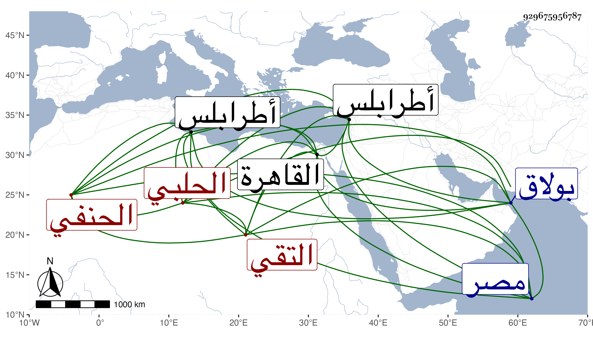

0902Sakhawi.DawLamic.ITO20230111-ara1.EIS1600.929675956787
Biography ID: 929675956787
150
أبو بكر بن علي بن محمد بن علي التقي الحلبي الحنفي نزيل القاهرة ويعرف بابن الطيوري وبخروف . ممن اشتغل وتميز وناب في القضاء بل استقل بقضاء طرابلس ولكن لم يتهيأ له مباشرته كما أن الكافياجي وغيره كتب له بتأهله لقضاء الحنفية بالديار المصرية كل ذلك أيام اختصاصه بالشهابي بن العيني فإنه كان صحبه وتقرب منه بالخيال وصار إلى ملاءة زائدة بعد فاقة شديدة وبعده إهانة الظاهر تمر بغاله بالضرب والحديد والإرسال به لقاضي المالكية ليمضي فيه الحكم بما تضمنه المحضر المكتتب فيه مما يؤذن بانحلاله وذلك بقيام الشريف إبرهيم القبيباتي عليه فخلصه الزيني بن مزهر وعزره البدر بن القطان بالإشهار والعري ثم بالنفي ولم يزل في إنعزال مقبلا على التجارة والمعاملة التي يذكر فيها بما لا يليق وسكن بولاق زمنا في سعة من المآكل وتكرم بالإطعام ونحوه لمن يرد عليه إلى أن عدا عليه بعض فتيانه وقتله شر قتلة في ليلة الجمعة ثاني عشر صفر سنة إحدى وتسعين وقد زاد على الخمسين إن لم يكن قارب الستين ودفن عند أبيه بتربة العضدي الصيرامي ولم يشيعه كبير أحد واحتاطت الدولة على تركته وكان ظريفا غاية في الأدب معي وكنت أفهم منه أنه يؤرخ عفا الله عنه .
